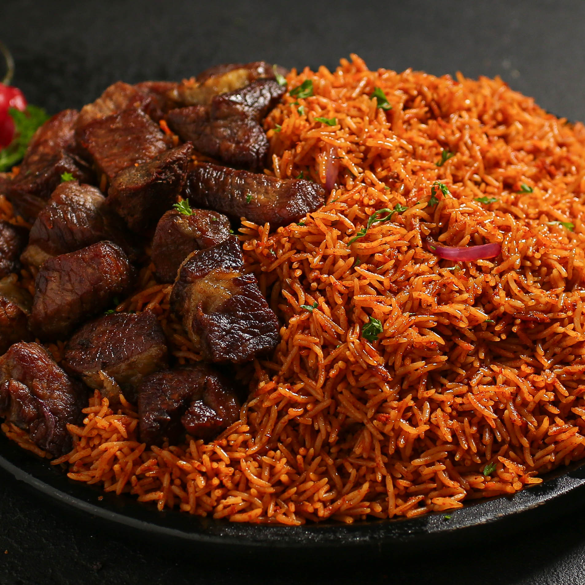

Jollof Rice
Home

Description
Jollof rice is a popular West African dish made with rice,
tomatoes, peppers, onions and a blend of spices. It is known
for its rich flavour, vibrant colour and delicious taste.
This dish is often served with fried chicken, plantain or
salad and is a favourite at parties, celebrations and
everyday meals.
Ingredients
- 2 cups long grain rice
- 4 medium tomatoes (blended)
- 2–3 red bell peppers (blended)
- 1 large onion (chopped)
- 3 cloves garlic (chopped)
- 2 tablespoons tomato paste
- 2–3 tablespoons vegetable oil
- 2 cups chicken stock or water
- Seasoning (salt, curry powder, thyme, paprika, etc.)
Steps
- Wash the rice and set it aside.
- Blend the tomatoes, peppers and 1 onion.
- Heat oil in a pot, add the chopped onion and fry until soft.
- Add the blended mixture and tomato paste, then cook for a few minutes.
- Add the rice, seasoning and chicken stock. Stir and bring to a boil.
- Reduce heat, cover and cook until the rice is tender (about 20–25 minutes).
- Serve hot with fried chicken, plantain or salad.